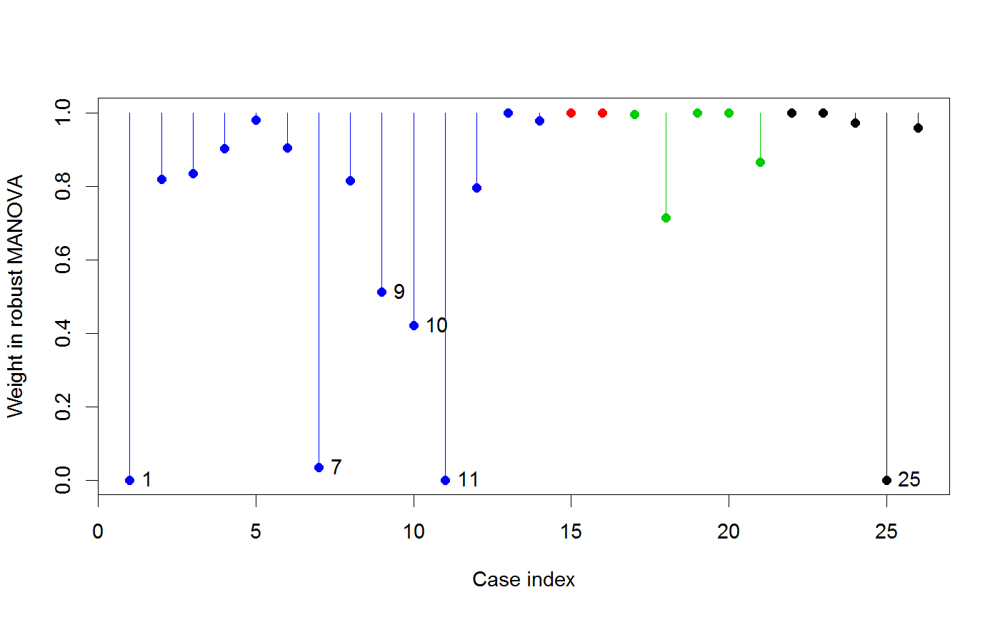

Plot observation weights from a robust multivariate linear models
Creates an index plot of the observation weights assigned in the
last iteration of robmlm. Observations with low weights
have large residual squared distances and are potential multivariate
outliers with respect to the fitted model.
# S3 method for robmlm plot(x, labels, id.weight = 0.7, id.pos = 4, pch = 19, col = palette()[1], cex = par("cex"), segments = FALSE, xlab = "Case index", ylab = "Weight in robust MANOVA", ...)
Arguments
| x | A |
|---|---|
| labels | Observation labels; if not specified,uses rownames from the original data |
| id.weight | Threshold for identifying obsrevations with small weights |
| id.pos | Position of observation label relative to the point |
| pch | Point symbol(s); can be a vector of length equal to the number of observations in the data frame |
| col | Point color(s) |
| cex | Point character size(s) |
| segments | logical; if |
| xlab | x axis label |
| ylab | y axis label |
| … | other arguments passed to |
Value
Returns invisibly the weights for the observations labeled in the plot
See also
Examples
data(Skulls) sk.rmod <- robmlm(cbind(mb, bh, bl, nh) ~ epoch, data=Skulls) plot(sk.rmod, col=Skulls$epoch)axis(side=3, at=15+seq(0,120,30), labels=levels(Skulls$epoch), cex.axis=1)# Pottery data pottery.rmod <- robmlm(cbind(Al,Fe,Mg,Ca,Na)~Site, data=Pottery) plot(pottery.rmod, col=Pottery$Site, segments=TRUE)# SocialCog data data(SocialCog) SC.rmod <- robmlm(cbind( MgeEmotions, ToM, ExtBias, PersBias) ~ Dx, data=SocialCog) plot(SC.rmod, col=SocialCog$Dx, segments=TRUE)